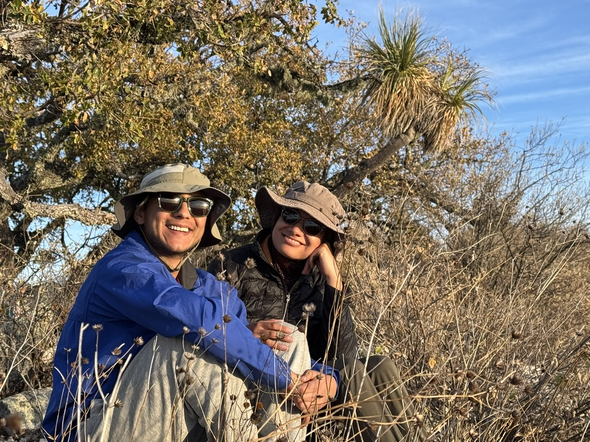
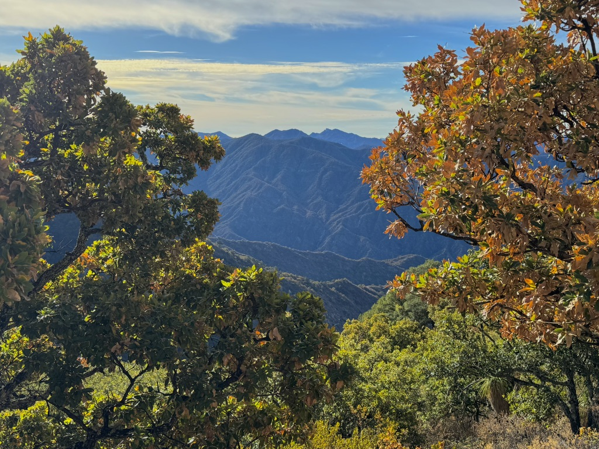
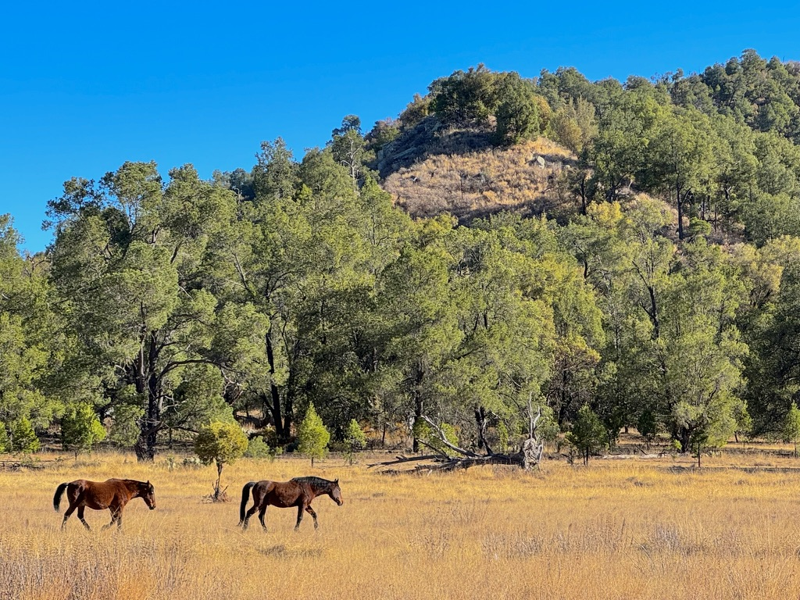

MontañaMountain3 fotos3 photos
Sierra de la LagunaSierra de la Laguna
Bosques, cañones y miradores en una de las reservas naturales más especiales de Baja California Sur.
Forests, canyons and viewpoints inside one of Baja California Sur's most remarkable natural reserves.
Consultar experienciaAsk about this experience